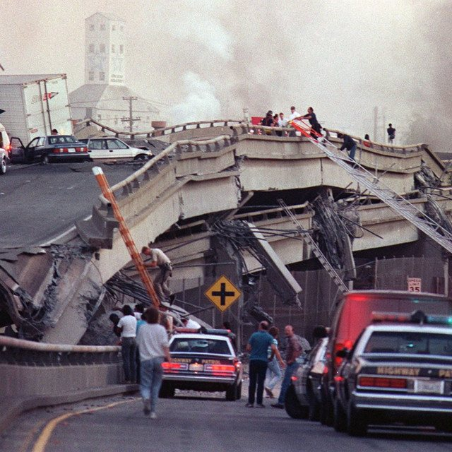

The Eclectic Polymath Podcast · Archive
#074 The '89 Earthquake: How Loma Prieta Exposed the Bay Area

About this episode
The 1989 Loma Prieta earthquake is often remembered through images of collapsed freeways, broken bridges, and the World Series broadcast suddenly interrupted by disaster. But the deeper story is about what the quake revealed: not just geological fault lines, but human-made ones.
This episode looks at Loma Prieta as a turning point in how the Bay Area understood seismic risk, infrastructure failure, and urban vulnerability. From soil liquefaction and flawed engineering to the collapse of the Cypress Street Viaduct and damage across San Francisco, Oakland, and Watsonville, the earthquake exposed how planning decisions can turn natural hazards into uneven disasters.
Key points
- The 1989 Loma Prieta earthquake is often remembered through images of collapsed freeways, broken bridges, and the World Series broadcast suddenly interrupted by disaster.
- This episode looks at Loma Prieta as a turning point in how the Bay Area understood seismic risk, infrastructure failure, and urban vulnerability.
- From soil liquefaction and flawed engineering to the collapse of the Cypress Street Viaduct and damage across San Francisco, Oakland, and Watsonville, the earthquake exposed how planning decisions can turn natural hazards into uneven disasters.
- This is a story about disaster as an audit — and why the Bay Area still lives with the warning of the next major rupture.
More like this
 #197 Spirit Halloween: The Business of the Pop-UpOctober 8, 202648:16
#197 Spirit Halloween: The Business of the Pop-UpOctober 8, 202648:16 #170 Hong Kong Under Japan: The Three Years and Eight Months That Changed the CitySeptember 21, 202659:25
#170 Hong Kong Under Japan: The Three Years and Eight Months That Changed the CitySeptember 21, 202659:25 #154 Salvador: Black Brazil, Colonial Power, and the Fractured CitySeptember 11, 202652:35
#154 Salvador: Black Brazil, Colonial Power, and the Fractured CitySeptember 11, 202652:35 #149 Dolly Parton: Dollywood, IP, and the Smoky Mountain StrategistAugust 26, 202635:11
#149 Dolly Parton: Dollywood, IP, and the Smoky Mountain StrategistAugust 26, 202635:11